| Imagen |
Descripcion |
Precio |
| 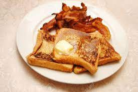 |
El pan con mantequilla con huevo y tocino es una deliciosa combinación que se ha convertido en un clásico desayuno en muchos lugares del mundo.
Este platillo no solo es apreciado por su simplicidad y rapidez en la preparación
, sino también por la armonía de sabores que se logra al combinar ingredientes tan básicos pero deliciosos
. Es una opción popular para empezar el día con energía y satisfacer los antojos de sabores reconfortantes. |
$40.00 |
| 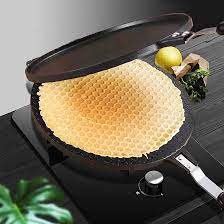 |
Los waffles son deliciosos y versátiles productos de panadería que han conquistado el paladar de personas en todo el mundo.
Su distintiva textura crujiente por fuera y su interior esponjoso los convierten en una opción popular para el desayuno, el brunch o incluso como postre. Estos exquisitos cuadrados o círculos
, formados por una masa ligera y aireada
,se cocinan en una plancha especial llamada "waflera" que imprime su característico diseño en cuadrícula.
|
$50.00 |
| 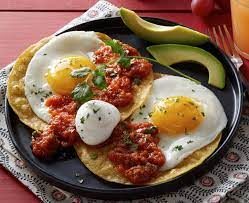 |
huevos rancheros son un plato tradicional y sabroso de la cocina mexicana que ha ganado popularidad en todo el mundo.
Esta deliciosa creación se compone principalmente de huevos estrellados que se sirven sobre una cama de tortillas de maíz,
bañados en una rica salsa de tomate y acompañados de guarniciones vibrantes. |
$60.00 |
| 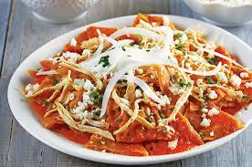 |
Los chilaquiles son un platillo tradicional de la cocina mexicana que combina sabores intensos y texturas variadas para crear una experiencia culinaria única.
Este plato se elabora a partir de tortillas de maíz cortadas en triángulos o tiras,
que se fríen hasta obtener una consistencia crujiente.
Los chilaquiles se sirven típicamente bañados en una rica salsa,
lo que les confiere un sabor vibrante y auténtico. |
$50.00 |
| 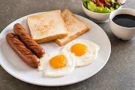 |
El pan con huevo y salchichas es un desayuno clásico y reconfortante que combina la simplicidad de los ingredientes con un sabor delicioso y satisfactorio.
Esta preparación generalmente consiste en huevos revueltos o fritos,
acompañados de salchichas,
todo ello colocado entre dos rebanadas de pan. |
$40.00 |
| 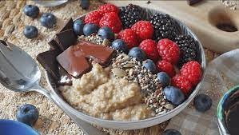 |
La avena con frutos es un desayuno nutritivo y delicioso que combina la suavidad y calidez de la avena cocida con la frescura y dulzura de una variedad de frutos.
Este plato ofrece una experiencia equilibrada,
aportando nutrientes esenciales y una explosión de sabores naturales. |
$30.00 |
| Imagen |
Descripcion |
Precio |
| 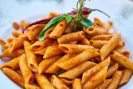 |
La pasta penne es un tipo de pasta italiana caracterizada por su forma tubular y corta,
con extremos diagonales. Su nombre proviene de la palabra italiana "penna", que significa pluma.
Esta pasta es versátil y se utiliza comúnmente en una variedad de platos,
desde salsas simples hasta recetas más elaboradas.
La forma tubular de los penne permite que se adhieran bien a diferentes tipos de salsas
, haciendo que cada bocado sea delicioso y satisfactorio. |
$50.00 |
| 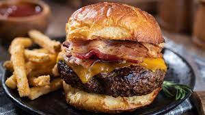 |
La hamburguesa es un popular platillo de origen estadounidense que consiste en una carne molida,
generalmente de res, sazonada y cocida a la parrilla o a la plancha.
Se sirve en un pan redondo, conocido como pan de hamburguesa,
y se acompaña con una variedad de ingredientes como lechuga,
tomate, queso, cebolla, ketchup y mayonesa.
Su versatilidad y delicioso sabor la han convertido en una opción gastronómica globalmente apreciada.
|
$40.00 |
| 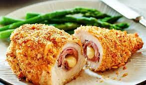 |
El Cordon Bleu es un plato de origen francés que destaca por su sofisticación y exquisitez.
Consiste en filetes de carne, comúnmente pollo, ternera o cerdo, rellenos con queso y jamón,
y luego empanizados y fritos hasta obtener una textura dorada y crujiente en el exterior.
El nombre "Cordon Bleu" se traduce como "cinta azul",
reflejando la alta calidad y nivel culinario asociado con esta preparación.
Este plato se ha convertido en un clásico de la cocina internacional,
apreciado por su combinación de sabores y su presentación elegante. |
$70.00 |
| 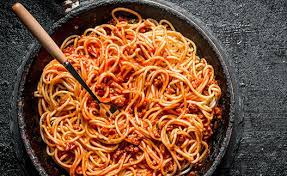 |
El spaghetti es un tipo de pasta italiana que se caracteriza por su forma larga y delgada,
similar a un hilo. Por lo general,
se elabora con sémola de trigo y agua.
Se cocina en agua hirviendo y se sirve con una variedad de salsas,
desde la clásica salsa de tomate hasta opciones más elaboradas con carne, mariscos o verduras.
Es un plato versátil y popular en la cocina italiana,
apreciado por su simplicidad y capacidad para adaptarse a diferentes sabores y preparaciones. |
$60.00 |
| 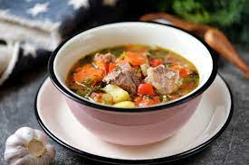 |
El caldo de res es una reconfortante sopa elaborada a partir de carne de res, huesos,
verduras y hierbas,
cocidos lentamente para extraer sabores ricos y nutritivos.
Esta apetitosa preparación se caracteriza por su aroma robusto,
su caldo claro y su contenido lleno de nutrientes. Además de ser una deliciosa opción culinaria,
el caldo de res es apreciado por su capacidad para brindar calidez y alivio,
convirtiéndolo en un plato reconfortante y tradicional en diversas culturas culinarias. |
$50.00 |
| 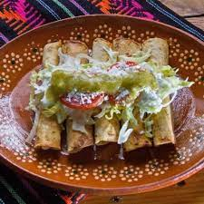 |
Los tacos dorados son una deliciosa especialidad de la cocina mexicana que consiste en tortillas rellenas de diversos ingredientes,
como carne de res, pollo o papa,
que se enrollan y luego se fríen hasta obtener una textura crujiente y dorada.
Se sirven comúnmente acompañados de salsas, guacamole, crema y otros condimentos,
ofreciendo una experiencia culinaria única y sabrosa.
|
$60.00 |
| Imagen |
Descripcion |
Precio |
|
El volcán de chocolate es un delicioso postre que se caracteriza por su apariencia de volcán en erupción.
Su estructura incluye un bizcocho esponjoso en la base,
relleno de chocolate fundido que se vierte hacia fuera al cortar el pastel,
creando la ilusión de lava. Este irresistible manjar se suele servir caliente,
acompañado de helado, frutas o crema,
proporcionando una experiencia culinaria indulgente y placentera para los amantes del chocolate. |
$50.00 |
| 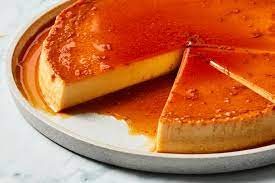 |
El flan es un delicioso postre de origen español, caracterizado por su textura suave y cremosa.
Elaborado a base de huevos, azúcar y leche,
se cuece al baño María hasta obtener una consistencia firme y un caramelo dorado en la parte superior.
Su sabor dulce y delicado lo convierte en un clásico favorito en la gastronomía mundial. |
$30.00 |
| 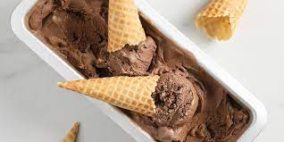 |
El helado de chocolate es una deliciosa creación que combina la suavidad y cremosidad de la base de helado con el rico sabor del cacao.
Este tentador postre ofrece una experiencia indulgente para los amantes del chocolate,
con su textura suave y su intenso aroma a cacao. Ya sea servido en cono o tazón,
el helado de chocolate es una opción clásica y reconfortante que deleita los sentidos con cada delicioso bocado.
|
$30.00 |
| 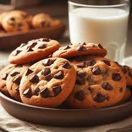 |
Las galletas con chispas son deliciosas golosinas horneadas que se caracterizan por su textura crujiente por fuera y tierna por dentro.
Están hechas con una masa de galleta clásica,
generalmente con ingredientes como harina, azúcar, mantequilla y huevos, a la que se le añaden generosas porciones de chispas de chocolate.
Estas chispas se funden durante el horneado, creando pequeñas bolsas de chocolate derretido en cada bocado,
ofreciendo una experiencia irresistible para los amantes de los postres. |
$20.00 |
|
Los muffins son pequeños bollos esponjosos y deliciosos, de origen inglés,
que se caracterizan por su textura tierna y por lo general se hornean en moldes individuales.
Estos versátiles pastelitos pueden tener una amplia variedad de sabores, como arándanos,
chocolate, plátano o nueces, y suelen ser adornados con una cobertura o glaseado opcional. |
$20.00 |
|
"Peruanitos" es un término cariñoso utilizado para referirse a los niños peruanos.
La expresión refleja el afecto y la ternura hacia los pequeños de Perú, resaltando su vitalidad,
diversidad cultural y la riqueza de sus tradiciones en un contexto amigable y cercano. |
10 soles |
| Imagen |
Descripcion |
Precio |
| 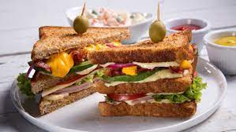 |
El sándwich es una deliciosa creación culinaria que consiste en colocar diversos ingredientes,
como carnes, quesos, verduras y salsas, entre dos rebanadas de pan.
Su versatilidad permite una amplia variedad de combinaciones,
lo que lo convierte en una opción popular y práctica para satisfacer antojos de forma rápida y sabrosa. |
$30.00 |
| 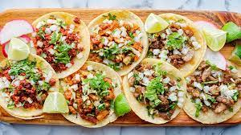 |
Los tacos son una deliciosa especialidad de la cocina mexicana que consiste en tortillas de maíz o harina rellenas con una variedad de ingredientes,
como carne asada, pollo, cerdo, pescado o vegetales. Se acompañan comúnmente con salsa,
guacamole, cebolla, cilantro y limón, ofreciendo una explosión de sabores y texturas en cada bocado. |
$50.00 |
| 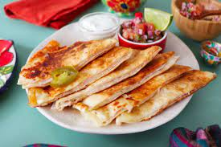 |
Las sincronizadas son una deliciosa especialidad de la cocina mexicana que consiste en dos tortillas de maíz rellenas de queso fundido y otros ingredientes como jamón,
champiñones, chorizo o frijoles. Estas tortillas rellenas se doran en un comal o sartén hasta que el queso se derrite,
creando un platillo sabroso y reconfortante. |
$50.00 |
| 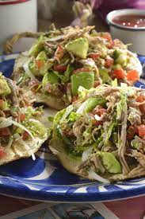 |
Las tostadas de salpicón son un delicioso platillo que combina sabores frescos y vibrantes.
Consisten en rebanadas de pan tostado generosamente cubiertas con salpicón,
una mezcla de ingredientes picados finamente, como carne de res cocida,
verduras frescas, y hierbas aromáticas. Esta combinación ofrece una experiencia culinaria única,
donde la textura crujiente del pan se fusiona con la jugosidad y los sabores refrescantes del salpicón. |
$40.00 |
 |
Las tortas de res son deliciosas preparaciones culinarias que destacan por su sabor jugoso y su textura tierna.
Elaboradas a partir de carne de res sazonada y cocida, se suelen colocar entre dos rebanadas de pan, acompañadas de ingredientes como lechuga, tomate, cebolla y salsas diversas. Este platillo, popular en diversas culturas culinarias, ofrece una experiencia gastronómica satisfactoria,
fusionando la suculencia de la carne de res con la variedad de sabores y texturas de sus complementos. |
$60.00 |
| 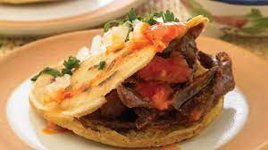 |
Las gorditas son un platillo tradicional de la cocina mexicana,
especialmente populares en regiones como el norte del país.
Se trata de pequeñas tortillas gruesas rellenas de diversos ingredientes,
como guisos de carne, frijoles, queso, chicharrón prensado o picadillo.
Estas tortillas rellenas se cocinan hasta que quedan doradas y crujientes en el exterior,
mientras que su interior conserva una textura suave. |
$40.00 |
| Imagen |
Descripcion |
Precio |
| 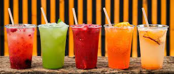 |
Las aguas de sabor son bebidas refrescantes y ligeramente aromatizadas que ofrecen una alternativa deliciosa y baja en calorías al agua tradicional. Están infusionadas con sabores naturales de frutas, hierbas o especias,
brindando una experiencia hidratante y agradable para aquellos que buscan variedad sin los azúcares añadidos de otras bebidas. |
$20.00 |
|
Los refrescos son bebidas carbonatadas y generalmente azucaradas que ofrecen una variedad de sabores,
desde cola hasta cítricos y frutas. Con burbujas efervescentes,
proporcionan una sensación refrescante y son populares como acompañamiento en comidas o como bebida para calmar la sed. Aunque disfrutados por su sabor y efervescencia, los refrescos también han sido objeto de debate debido a su contenido de azúcares y aditivos,
lo que ha llevado a una creciente demanda de opciones más saludables en el mercado.
|
$25.00 |
|
Las bebidas alcohólicas son líquidos que contienen etanol,
obtenido mediante la fermentación de ingredientes como cereales,
frutas o caña de azúcar. Su consumo puede tener efectos psicoactivos,
provocando cambios en el estado de ánimo y el comportamiento. Existen diversas variedades,
como cerveza, vino, licores y destilados,
cada una con características únicas en sabor. |
$50.00 |
| 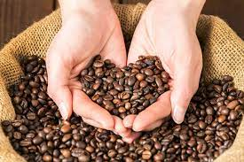 |
El café es una bebida popular y estimulante preparada a partir de granos tostados de la planta de café.
Conocido por su sabor robusto y aroma característico, el café se disfruta en todo el mundo.
Esta bebida versátil puede ser elaborada de diversas formas,
como expreso, café filtrado o prensa francesa, y es apreciada no solo por su capacidad para proporcionar energía,
sino también por ser un elemento social y cultural fundamental en muchas sociedades. |
$30.00 |
 |
Estas delicias suelen incluir ingredientes como frutas, jarabes, chocolates o vainilla,
creando una bebida refrescante y indulgente.
Se sirven comúnmente en vasos altos y se pueden decorar con nata montada, siropes o trozos de frutas, ofreciendo una experiencia dulce y satisfactoria. Las malteadas son populares en todo el mundo y se disfrutan como una opción deliciosa para refrescarse o como un capricho indulgente. |
$40.00 |
| 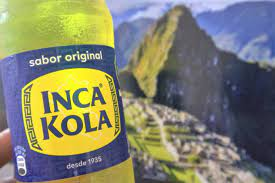 |
nca Kola es una popular bebida gaseosa originaria del Perú, conocida por su distintivo color amarillo brillante y su sabor único y refrescante. Lanzada en 1935, se ha convertido en un ícono cultural peruano y es apreciada por su dulzura intensa con toques de hierbas y cítricos. Su popularidad ha trascendido las fronteras nacionales, convirtiéndola en una bebida querida en diversas partes del mundo,
especialmente en la comunidad peruana y en aquellos que buscan experiencias de sabores únicas./p> |
$1000.00 |